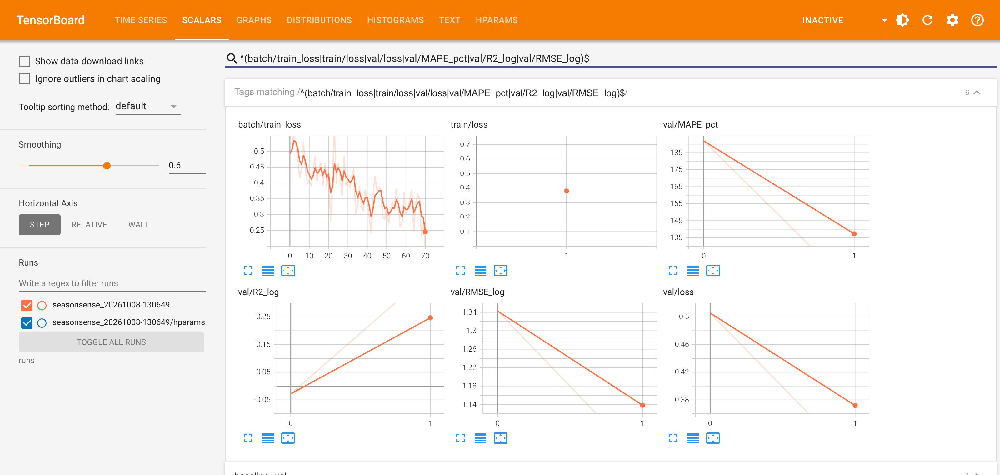

Agriculture is still the livelihood of most Rwandan households, and almost all of it depends on rain. Farmers plant two main seasons a year: Season A (September to February) and Season B (February to July). The Second National Strategy for Transformation (NST2, 2024–2029) puts productivity at the centre of its agriculture pillar. It targets average agricultural growth above 6% a year and a productivity increase of more than 50% for the priority food crops (maize, beans, potatoes, rice and cassava). It also aims for self-sufficiency in maize, Irish potatoes and beans by 2029, and plans to raise irrigated land from about 71,500 ha to about 132,000 ha [1, 2]. To reach these targets, planners need to know where and why yields fall short.
NISR's Seasonal Agricultural Survey (SAS) shows that the gaps are large and uneven. Our analysis of the published district tables for 2023A to 2026A finds the following [3]:
The problem. SAS results are published only after harvest, and they report what happened, not what is likely to happen in the current season or why. District agronomists, RAB and MINAGRI programme officers, and food-security analysts (WFP, the CFSVA team) have to decide where to send fertiliser subsidies, extension visits and early food-security responses during the season, without a quantitative forecast. Smallholder households in high-variance districts are the most affected: a failed season lowers both their food supply and their income. SeasonSense addresses this gap. It is a model that forecasts each district-crop yield for the coming harvest from in-season weather and recorded farm practices, and its outputs can be reported as (a) an early warning of likely shortfalls against the district's normal yield and (b) an estimate of how much of that gap is linked to weather and how much to input adoption. Because the model is built only from NISR's own tables and free global weather data, NISR can update it every season at no cost.
| Source | Content used | Granularity / size |
|---|---|---|
| NISR Seasonal Agricultural Survey: SAS 2023, 2024 and 2025 annual tables; SAS 2026 Season A tables (statistics.gov.rw) [3] | Average yield by crop and district (target); % of farmers using inorganic fertiliser, organic fertiliser, improved seed, pesticides and erosion control (features) | 30 districts × 17 crops × 7 seasons (2023A–2026A): 3,178 yield rows and 210 district-season practice records |
| ERA5 reanalysis via the Open-Meteo archive API [4] | Daily rainfall, Tmax, Tmin and FAO-56 reference evapotranspiration (ET0); elevation | 30 district centroids × 1,277 days (Sep 2022 to Feb 2026) |
| geoBoundaries RWA ADM2 [5] | District polygons → centroids for the weather queries | 30 polygons |
Why it fits. The SAS is Rwanda's official source of crop statistics. It is based on an area frame of 1,200 sampled segments and reports results for every district and season, the same unit at which agricultural plans and subsidies are managed. A model trained on SAS yields therefore predicts NISR's own measure of productivity. Since most farms are rain-fed, weather during the season is the main reason the same district's yield changes from one season to the next. The farm-practice tables add the factors that policy can change. All sources are public and free, so the project is fully reproducible.
Limitations and how we handle them. (1) Short history: the district tables use the same format only for 2023A–2026A, which gives seven seasons. We therefore keep the model small (about 8.3k parameters), share information across crops and districts through embeddings, and use a strict temporal split (train 2023A–2025A, validate 2025B, test 2026A) so that no future season leaks into training. In the ML Pipeline phase we will add 2019–2022 SAS tables after harmonising their older layout. (2) Aggregation and sampling error: district averages hide differences between farms, and estimates for rare crops (e.g. wheat in 81 rows, groundnuts in 129) rest on few plots. A "–" in the tables means the crop was not measured, so we drop those cells rather than treating them as zero. We train with Huber loss, which limits the influence of noisy extreme values. (3) Weather resolution: ERA5 has a resolution of about 25 km and is known to misestimate rainfall over steep terrain such as the western highlands, and a single centroid may not represent the cropland of a whole district. We will test CHIRPS rainfall and cropland-weighted averages as replacements. (4) Features not specific to crops: the practice-adoption rates are given per district, not per crop, so the model learns their average association with yield. These are associations, and we will present them as such rather than as causal effects. (5) Strong persistence: a naive baseline that predicts each district-crop pair's past mean already reaches a validation MAPE of 15.4%. Most of the variation is therefore between districts and crops, and the model has to add value by predicting the season-to-season deviation from that mean. The baseline is logged to TensorBoard and is the benchmark the full model must beat.
Each example is one (district, crop, season) and the target is the standardised log-yield. We model yield on the log scale because crop yields range from about 600 kg/ha (beans) to more than 13,000 kg/ha (cassava). On this scale, errors are relative and the effects of weather and inputs combine multiplicatively. The network has three branches whose outputs are concatenated:
The concatenated 62-dimensional vector goes through an MLP head (64 units, ReLU, dropout 0.2) that outputs the predicted log-yield. Training uses Adam (lr 1e-3, weight decay 1e-4), Huber loss and gradient clipping. Why this design and not the alternatives? (a) Gradient-boosted trees (XGBoost/LightGBM) are the strongest standard choice for small tabular data, and we will use them as a benchmark. They need the season's weather summarised into fixed totals (e.g. seasonal rainfall), which loses the timing of stress. They cannot produce partial-season forecasts without a separate model for each forecast week, and they handle 30 districts × 17 crops as one-hot or target-encoded categories, which share less information than learned embeddings when there are about 2,250 training rows. (b) A separate regression for each crop or district would leave about 7 points per district-crop pair, far too few to estimate weather effects. (c) LSTM or Transformer encoders can model sequences but have more parameters. An LSTM has about 33% more parameters than a GRU of the same width, and self-attention needs much more data than seven seasons provide. A GRU gives the inductive bias of an ordered sequence at the lowest parameter cost, which is consistent with crop-yield studies that pair a recurrent weather encoder with management features [6, 7]. The overall model is deliberately small (8,335 parameters) to limit overfitting on this dataset.
The full pipeline is implemented in PyTorch in one notebook (nisr_yield_pipeline.ipynb, link in the Appendix). It
has 11 commented sections: set-up, data download, parsing of the SAS Excel tables, weather retrieval, weekly sequence
building, the feature table and temporal split, the Dataset and DataLoaders, the model, the training and evaluation functions,
the TensorBoard placeholder run, and 2026A inference. The notebook runs from raw NISR Excel files to a 2026A forecast CSV in
about one minute on a laptop CPU. As required at this stage, the model was trained for one epoch only (71 mini-batches). Within that
epoch the batch training loss fell from about 0.50 to about 0.25, validation Huber loss fell from 0.51 to 0.29, and validation R²
on the log scale rose from −0.03 (untrained) to 0.41.
Validation MAPE fell from 192% to 105%, which is still far worse than the 15% baseline. This is expected for an untrained model, and these are
placeholder numbers, not results. Full training, tuning and benchmarking against the baseline and LightGBM will follow in
ML Pipeline.
A SummaryWriter logs each run to a time-stamped directory under runs/. Beyond loss and accuracy-type
metrics, it records: the loss and gradient norm of every batch; epoch-level training and validation loss; validation MAPE,
median APE, RMSE and R² on the log scale; the same metrics for the naive baseline; validation MAPE for each crop (17 curves);
learning rate; weight histograms; the model's computation graph (add_graph); the full configuration as text; and the
hyperparameters with their final metrics in the HParams tab. A screenshot of the Scalars tab for this placeholder run is in the
Appendix.
| Item | Link |
|---|---|
| Code (GitHub) | {{REPO_URL}} |
| Loom registration recording | https://www.loom.com/share/f86209e28d1a4124a70b1acc07328ebc |

Top row: per-batch training loss over the 71 steps of the single epoch, epoch training loss, and validation MAPE (%). Bottom row: validation R², RMSE (log scale) and Huber loss, at step 0 (untrained) and step 1 (after one epoch). Smoothing is 0.6; the faint line shows the raw values.